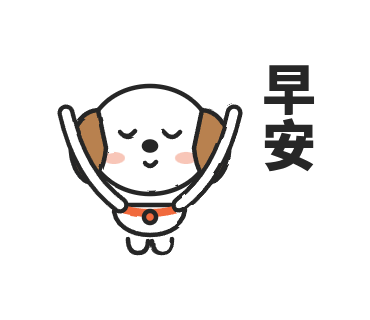
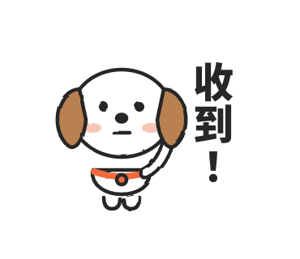
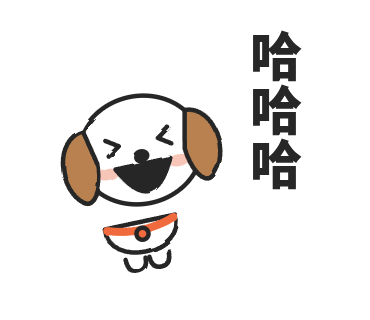
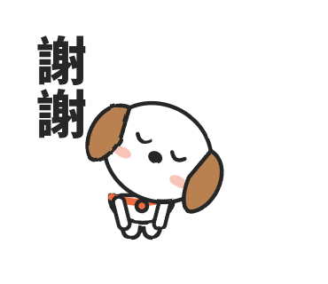
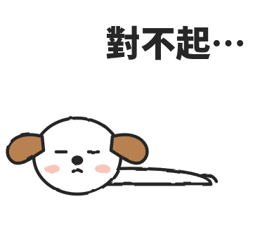
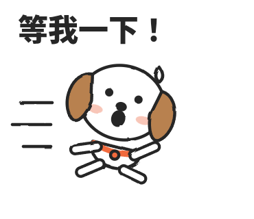
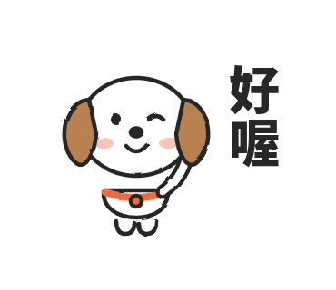
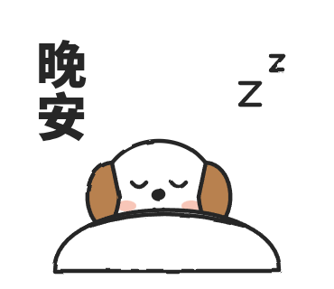
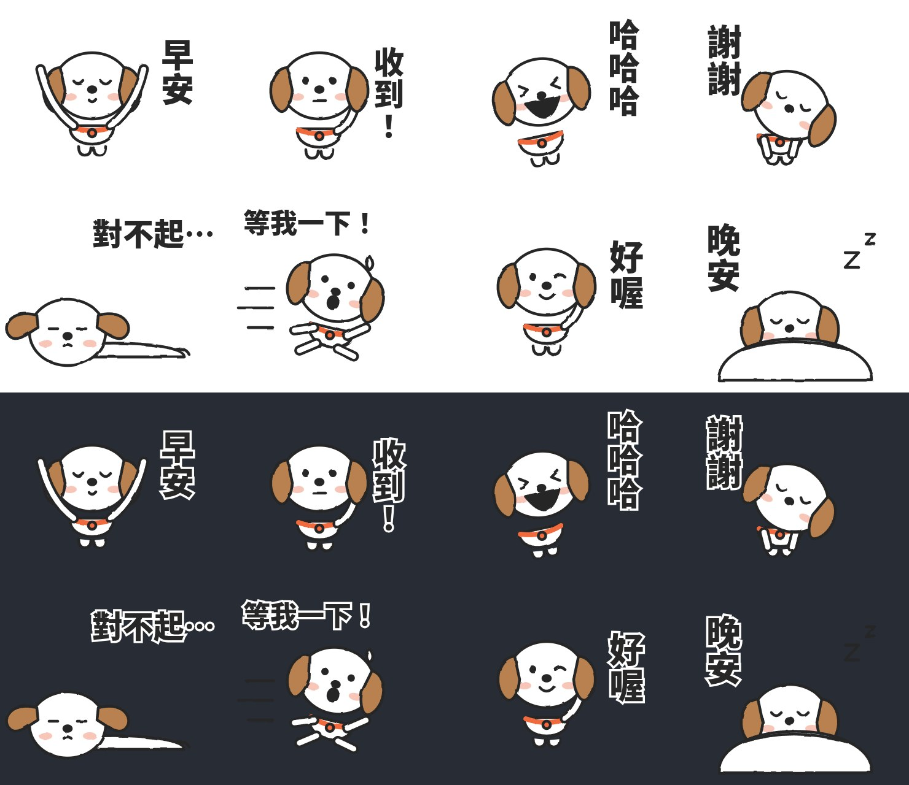

麻糬 LINE 貼圖・第一組 8 張
2026-10-02 試作。目標是一組能送上 LINE Creators Market 賣的原創貼圖。
角色
麻糬是一隻白色、圓滾滾的米格魯幼犬：大圓頭、咖啡色垂耳、兩個豆豆眼、小黑鼻子、軟軟的小身體。全組只有一個主色，是脖子上的橘色項圈，一眼就能認出是牠。
8 張








聊天室深色模式下的樣子：

畫圖規則：先挑後畫
先挑。每一張動筆前先回答三句話：這句話是誰、在什麼時候會傳；情緒只放在一個地方（嘴、眼睛或整個姿勢，三選一）；這張只做哪一件誇張的事。
再畫。筆畫有預算：
| 項目 | 規則 |
|---|---|
| 角色 | 同一隻，臉型比例不變；頭佔身高一半以上 |
| 線條 | 一種粗細的黑線，帶一點手抖，不畫陰影 |
| 顏色 | 白底黑線，全組只准一個主色 |
| 眼睛 | 兩個黑點或兩條弧線，不畫睫毛、不畫反光 |
| 五官 | 不畫人類的鼻子和嘴唇，表情只靠嘴形 |
| 留白 | 角色不超過畫面六成，留位置給字 |
| 字 | 大字、可直排，一張最多八個字，口語優先 |
| 質感 | 圓、軟、想抱；不尖、不硬 |
過關門檻與自評
- 遮住字，光看圖猜得到情緒嗎？哈哈哈、對不起、等我一下、晚安四張猜得到；早安和謝謝靠字比較多，收到、好喔的手被耳朵擋住，動作不夠清楚。
- 縮到聊天室大小還認得出嗎？白圓頭配咖啡耳和橘項圈，縮小後仍認得出是同一隻。
第一組的誠實結論：角色站得住，八張裡大約一半動作夠強，另一半要重畫手的位置。
爆款判斷表
這一段等市場研究補上：台日近年賣得動的原創角色有哪些共同點、Jellycat 與史奴比哪些地方能借、哪些借了就變仿作。補上後當第三道門檻，重畫第二組。
上架規格（LINE Creators Market）
- 一組 8／16／24／32／40 張
- 每張最大 370 × 320 像素、PNG、透明背景
- 另需主圖 240 × 240、聊天室標籤圖 96 × 74